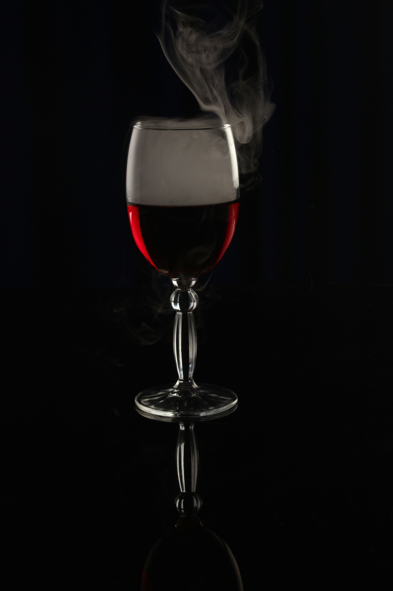

About the Experience
Hidden beneath the surface lies a sanctuary for the discerning. The Rare Cellar is not merely a place-it is an experience. Here, indulgence is ritual, and rarity is revered. Our guests are chosen, not invited. Our menu is whispered, not printed.
Selections from the Cellar

AB-
O-
B-
Only the rarest may dine. Submit your credentials for consideration.